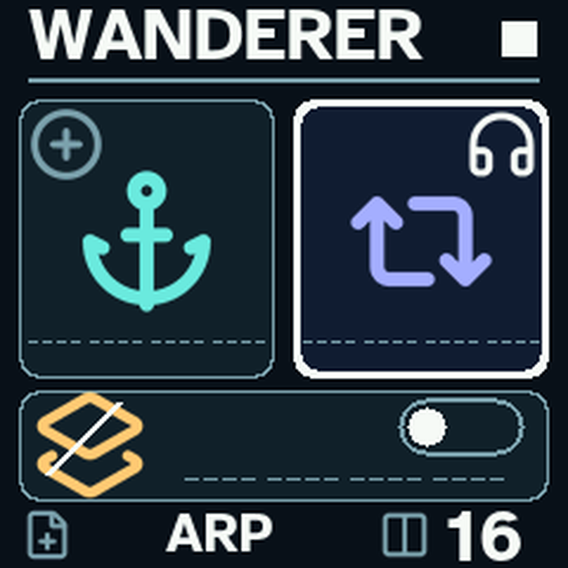
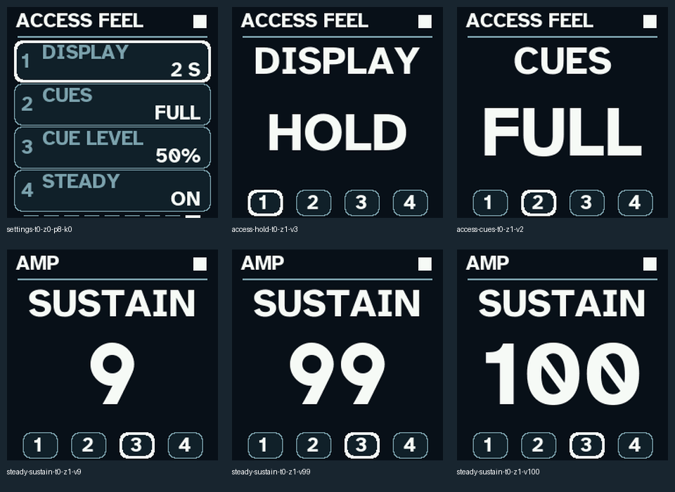
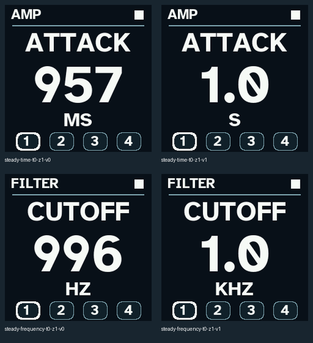

New: Wanderer 3.0 RC1 test build. Read the touch-first 3.0 guide. It has not been tested on hardware yet.
Wanderer 1.7 RC4 — author hardware-tested
The new firmware and matching source archive have been checked and confirmed tested on a physical FM-1. The RC4 download is not yet hosted on GitHub; the 1.4 link below remains the current GitHub installation download until RC4 is attached to a release.
What's new in RC4 and verified checksums · Hardware test confirmation
Wanderer 1.4
Download tested firmware · What’s new and source download

Access Feel adds adjustable display hold, informative audio cues and steady numeric Zoom. Hold SCL/SELECT, then turn PRESET left once. Four knobs control Display, Cues, Cue Level and Steady.
The shortcut reminder appears only when ZOOM is selected in the Accessibility menu, in either normal or Zoom view.
Press HOME and EDIT together, then release both, to toggle Zoom while keeping your current page. The Accessibility page now uses THEME, ZOOM and MOTION labels, descriptive values and a visible shortcut reminder.
Zoom now enlarges the current label and value to fit the available space. Long values can wrap onto two large lines. Units and numbered knob indicators keep their own space. Short words and numbers can grow much larger than long phrases. Normal views retain their existing font sizes.
Author hardware-tested release. This download is the exact RC6 build accepted on November 2, 2026.
Quick start
Use the included `.fwsc` with your existing FM-1 installation method. Keep the verified RC4 file and your original V15/SLOOP recovery files available. New v8 saves are not readable by RC4, so retain existing slots and save to spare slots. Installation/recovery instructions and the command-line installer are included in the source folder. The author confirmed this exact RC6 build passes his standard physical FM-1 tests on November 2, 2026.
Start at a lower master level: the modern engine has 6 dB more gain. On Home, the four knobs remain Melt, Drift, Scatter Amount and Master. The left ALGORITHM encoder sets internal tempo. PRESET browses sounds; SELECT jumps banks. PLAY starts/stops the transport as before. Short REC toggles note recording; hold REC opens Print. Short EDIT opens the sound editor; hold EDIT toggles Layer. Hold HOME is panic.
Tap SCL/SELECT to open Music. Hold it to open Accessibility. PRESET moves between Accessibility, Chorus, Delay, Reverb, Music, Output, Arpeggiator and Arp Feel. The four main knobs match the displayed parameters in order. SELECT highlights a row; its button advances/toggles that row. HOME returns. Accessibility uses THEME (DARK/LIGHT), ZOOM (OFF/ON) and MOTION (FULL/REDUCED), with short explanations. The Zoom shortcut reminder appears only when ZOOM is selected in this menu, in either normal or Zoom view.
Press HOME and EDIT together, then release both, to toggle Zoom on or off from any running-firmware view. Either press order works. Hold neither button by itself first: HOME alone retains its panic hold, and EDIT alone retains its layer hold. The combination toggles once until both keys are released and keeps your current page, selection, recording, layer and dialog. HOME + SCL/SELECT retains the oscilloscope shortcut. On views with a Zoom layout, text changes immediately; the oscilloscope keeps its waveform layout. This changes the current display setting without a flash write; normal project Save also saves preferences as before.
Hold SCL/SELECT to open Accessibility, then turn PRESET left once for Access Feel. Knobs 1–4 control DISPLAY, CUES, CUE LEVEL and STEADY. DISPLAY offers 2 S, 5 S, 10 S and HOLD for temporary parameter/preset views and transient notices. HOLD stays until HOME dismisses it or another action replaces it. Critical and saved-result messages remain persistent. New adjustments restart the selected display time.
CUES offers OFF, ACTIONS and FULL. ACTIONS retains action/navigation sounds. FULL adds ascending/descending switch patterns and minimum, midpoint and maximum cues on range controls. Repeated turns against a limit stay quiet. CUE LEVEL changes the cue mix separately from the music level; it still follows Master. Zero cue level and CUES OFF are silent. The Output page CUES control remains a master on/off switch. Cue sounds do not enter printed audio or the scope trace.
STEADY defaults to ON and reserves enough space for each numeric parameter’s range, including time and frequency unit changes. Words keep their adaptive fit. Turning STEADY off restores fully adaptive numeric sizing. The defaults are a two-second display, FULL cues, 50% cue level and STEADY ON. These global preferences save with the normal stopped project Save; control turns themselves never write flash. Existing project files are unchanged.
Zoom shows the selected parameter while all four knob assignments stay the same. It automatically enlarges the label and value to fit, wrapping long values over two lines where useful. Units and the numbered knob indicators keep their own space. Short values can grow much larger than long phrases. Normal views retain their existing font sizes.
Music has Root, Scale, 16/32-step Length and scaled Keyboard. Stop before changing length. Printed RAM audio locks tempo and length as before. Each effect has its own page; its first knob is On and its second is Mix. Delay adds Time and Feedback. Reverb adds Size and Damping. Output has Level, audible Cues and project Slot.
For Scatter, tap EDIT, then turn PRESET left once from AMP. Its only page has Mode, Size, Amount and Smooth. Try Cloud, Auto or 64/128 ms, Amount around 60 and Smooth around 96 for gentle overlapping loops. Try Fills for phrase-end stutters, Reverse for backwards fragments or Tape for an octave-down repeat. Keep Smooth low for sharper cuts. Scatter feeds the effects, so Delay and Reverb can soften the result. It does not rewrite note memory or the protected Anchor.
Hold ARP to open the arpeggiator directly. Short ARP still opens Load. Knob 1 turns it on; knob 2 chooses the pattern; knob 3 chooses timing; knob 4 sets octave range. Turn PRESET right once to Arp Feel for Gate, Swing, Latch and Clock. Hold a chord and listen. The arp works with local keys and USB/TRS MIDI; recorded event loops continue independently. Four sound voices are shared, so a busy arp can steal a loop voice.
UP DOWN and DOWN UP bounce without repeating endpoints. UP REPEAT and DOWN REPEAT include the endpoint repeats. UP UP and DOWN DOWN play each note twice. PLAYED follows your note order. RANDOM, CONVERGE, DIVERGE and CHORD add other shapes. Timing includes quarter, eighth, sixteenth and thirty-second notes, each with dotted/triplet variants. Swing preserves the length of each pair; long gates leave little space between notes.
REC records the generated arp notes and durations into Memory or the enabled Layer, rather than saving the held source chord. Latch retains a released chord. Once all physical keys are up, a new chord replaces it. Turning latch off releases unheld notes. Changing arp mode/rate restarts its pattern. Stop and panic clear the latch; re-press keys to begin again. The ARP lamp follows sounding gates; key glows show the held chord. GLO follows Scatter activity.
USB/TRS clock is selected explicitly. It sets arp timing and accepts Start/Continue/Stop; one second without clock clears the arp. Event-loop tempo and printed audio remain on their existing clock. External lock and timing under heavy redraws still need hardware evaluation. Internal clock is the straightforward starting point.
SAVE catches an Anchor. Long SAVE selects project save as before. SEQ opens Save and short ARP opens Load; confirm with SCL/SELECT. Saving stores notes, settings and patch snapshots. Printed audio remains RAM-only and must be recorded externally. Loading a project clears printed RAM history.
For a quick introduction, listen to sustained basses, pads and four-note chords; try Scatter with and without effects; record an arp into each layer; test latch/Stop/panic; save into a spare slot and reload. Check your normal installation and rollback paths on the FM-1. Software evidence is included in the test report.
Changes and limitations
Wanderer 1.4 develops the author-tested 1.3 RC4 foundation. The protected platform, firmware identity and recovery loader are retained.
The subtractive family now uses independently phased same-family oscillators, a stronger additive sub oscillator, gentler rounding and a cascaded four-pole low-pass path. Phase distortion uses 16-bit phase coordinates instead of 8-bit steps. The bank still has 100 sounds: 40 subtractive, 10 FM, 10 phase distortion, 20 string and 20 modal patches. FM patches have less sustained modulation and more fundamental. Modern-engine output gain rises by 6 dB; start listening with a lower master setting. Earlier legacy engines remain in place for v1–v5 projects.
Scatter has one editor page with Mode, Size, Amount and Smooth. The former PLAY page is removed; key/scale/keyboard options live in Music. Mixed, Slices and Hops retain the core gestures. Reverse, octave-down Tape, overlapping Cloud, harmony-preserving Pitched and phrase-ending Fills add distinct ways to play the history. Pitched uses octaves; upward fifths are available only for a scale whose entire pitch-class set permits them (normally Free). It does not identify the root of arbitrary printed audio. New modes leave phrase starts clean. Two complementary read heads and fractional interpolation soften boundaries. Smooth zero keeps the sharper cuts. All Scatter processing precedes chorus/delay/reverb. Source notes and protected audio remain read-only.
On parameter pages, knobs 1–4 follow rows 1–4. PRESET changes pages, SELECT highlights a row and HOME returns. Accessibility, Effects, Music, Output and Arpeggiator follow this layout, including Zoom. Scope uses knobs 1–4 for Gain, Time, Hold and Level, shown below the waveform. Side encoders no longer edit hidden scope/effect parameters. Hold ARP to open the arpeggiator; short ARP retains Load.
The arp has 13 patterns and 12 timing choices, one to four octaves, 5–100% gates, 0–50% swing, latch and internal/USB/TRS clock. It processes held local/MIDI notes; event playback continues independently. Recording captures generated notes and durations into the selected lane. Latch replaces its chord when a new chord begins after all physical keys are up. Stop/panic clear the arp; re-press held keys afterward. A mode/rate change releases the current arp gate and restarts the pattern. MIDI sustain and ownership remain separate by input/channel. A full 64-entry held-note table drops its oldest entry. Very high octave extensions fold down rather than clamp every note to 127.
External clock controls the arp rate, with Start/Continue/Stop support and a one-second loss timeout. The event loop and printed audio retain their existing tempo; this is not full transport PLL synchronization. Clock is estimated from received message intervals and can vary under heavy screen activity. Do not expect sample-accurate lock to an external device from host tests alone.
ARP lamp shows sounding gates, key glows show the held/latch chord, and GLO shows Scatter activity. LED pitch mapping is cached once per pass. Unused operator-envelope work and non-PD slope divisions are removed. An eight-block ADPCM cache prevents the overlapping heads from repeatedly decoding competing blocks. Grain duration is calculated at gesture boundaries.
New saves use v8. v6/v7 slots import read-only with arp off and smoothing defaults; v1–v5 migration retains the legacy bank. Existing patch and Anchor snapshots are retained, but modern synthesis improvements change their rendered sound. Keep previous slots and save v8 projects into spare slots for rollback. Printed audio remains RAM-only.
Wanderer 1.4 uses the exact RC6 package accepted by the author after his standard physical FM-1 tests. Software verification and the hardware confirmation are recorded separately in the release.
New accessibility cues
The preview plays minimum, midpoint, maximum, off and on, in that order. It uses the default cue level and has not been normalized.
Interface

Stable units
